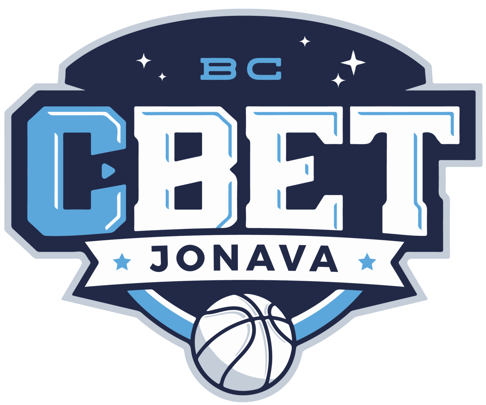

Jonavos „CBet“

Įkūrimo data: 1999 metai
Vyr. treneris: Virginijus Šeškus
Komandos sudėtis:
- Kahlil Thomas
- Justinas Ramanauskas
- Juan Palacios
- Evaldas Šaulys
- Laimonas Kisielius
- Nedas Rauluševičius
- Edvinas Šeškus
- Vitalijus Kozys
- Astijus Ivanovas
- Matas Masiliūnas
- Lachlan Anderson
- Tomas Zdanavičius
www.bcjonava.lt >
Atgal